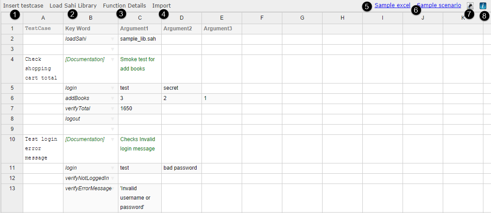
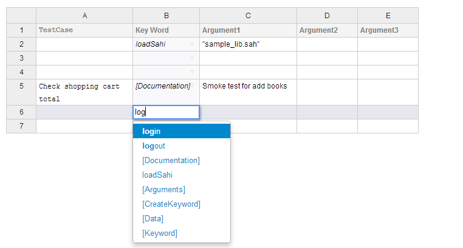
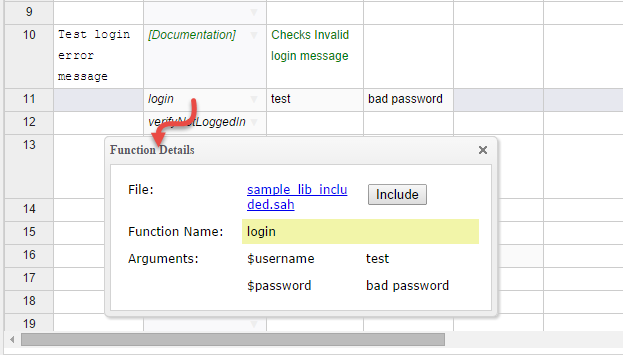
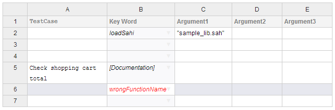
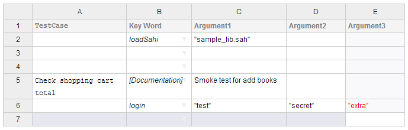
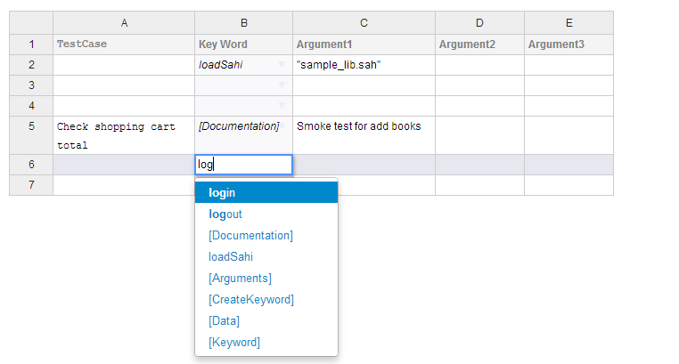
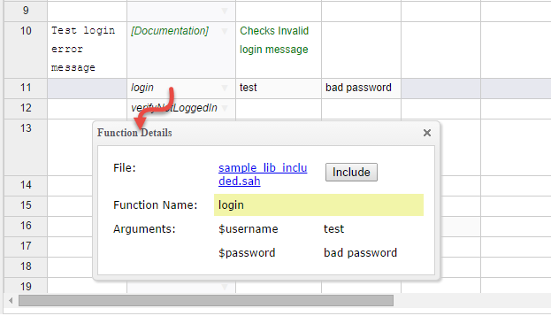
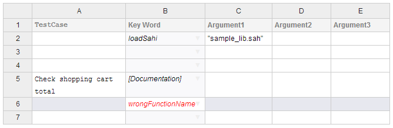
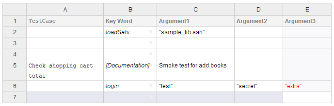

Sahi Pro - Scenario Editor
From Sahi Pro V5.1, a web based UI for creating scenarios is available. It is a user-friendly, easy and interactiveuser interface for running and developing Sahi scripts which are in .xls, .xlsx or .s.csv format.
It uses most of the shortcuts available in Microsoft Excel.
Sahi understands csv files with
.s.csv extension as a scenario file (eg. sample.s.csv).warning
This application is not supported on IE versions lower than IE10.
Launching the Scenario Editor
-
Open the Editor window from Sahi Dashboard.
-
Search for the scenario file to be edited in navigation panel. Click on the file name to open the scenario editor.
Introduction to the Web UI



If the path or name of the file specified in loadSahi is wrong, it gets shown in red.
 If the user adds a wrong function, i.e. a function that is not defined in the included files, or if he makes a mistake with the function name, the name appears in red.
If the user adds a wrong function, i.e. a function that is not defined in the included files, or if he makes a mistake with the function name, the name appears in red.
Only if the function is defined in the file included through 'loadSahi', does it appear in black.
 If the number of arguments added in the UI for a function is more than the number of arguments in the function definition, the extra arguments are shown in red.

| 1 | Insert a new testcase. |
| 2 | Load Sahi Library. |
| 3 | Show function details for the selected cell. |
| 4 | Allows to import multiple functions at once. |
| 5 | Load Sample excel file. |
| 6 | Load Sample scenario file. |
| 7 | Shortcut info. |
| 8 | Script Info |
Key features
loadSahi
loadSahi loads a .sah file. All of the functions defined in the .sah file get dynamically added. They can all be seen in the autocomplete dropdown.
Detail box
The UI contains a button on the top of the editor called "Function Details". Selecting a cell and clicking this button gives details of the selected function and its arguments. This gives a basic idea as to what the type and number of arguments are.
Red colored notification
The SpreadSheet UI notifies the user about mistakes by marking problematic cells in red color.If the path or name of the file specified in loadSahi is wrong, it gets shown in red.
If the user adds a wrong function, i.e. a function that is not defined in the included files, or if he makes a mistake with the function name, the name appears in red.Only if the function is defined in the file included through 'loadSahi', does it appear in black.
 If the number of arguments added in the UI for a function is more than the number of arguments in the function definition, the extra arguments are shown in red.

List of shortcuts
CTRL combination shortcut keys
| CTRL + A | Select all contents of the worksheet. |
| CTRL + HOME | Move to column header cell. |
| CTRL + C | Copies the selected cells. |
| CTRL + X | Cuts the selected cells. |
| CTRL + V | Pastes in the selected cell. |
| CTRL + Y | Repeats the last command or action, if possible. |
| CTRL + Z | Uses the Undo command to reverse the last command or to delete the last entry you typed. |
| CTRL + / | Comment/ Un-comment the selected row/s. |
| CTRL + DELETE | Deletes the selected row/s. |
ALT combination shortcut keys
| ALT + ENTER | While typing text in a cell pressing Alt + Enter will move to the next line allowing for multiple lines of text in one cell. |
| ALT + N | Loads the new worksheet. |
| ALT + O | Opens the dialog to load existing scenario. |
| ALT + F2 | Displays the Save As dialog box. |
| ALT + SHIFT + E | Displays the names of the feature developers. |
| ALT + INSERT | Insert Testcase shortcut. |
| ALT + S | Load Sahi library shortcut. |
| ALT + 1 | Insert new row above the current row. |
| ALT + 2 | Insert new row below the current row. |
Function keys
| F2 | Edit the selected cell. |
| ALT + F2 | Displays the Save As dialog box. |
| SHIFT + F10 | Displays the shortcut information pop-up. |
Other useful shortcut keys
| ARROW KEYS | Move one cell up, down, left, or right in a worksheet. |
| SHIFT + ARROW KEY | Extends the selection of cells by one cell. |
| DOWN ARROW | Selects the next command when a context menu or Auto-complete option is open. |
| UP ARROW | Selects the previous command when a context menu or Auto-complete option is open. |
| BACKSPACE | Deletes one character to the left in the Formula Bar. Also clears the content of the active cell. |
| DELETE | Removes the cell contents from selected cells. In cell editing mode, it deletes the character to the right of the insertion point. |
| CTRL + DELETE | Deletes the selected row/s. |
| END | Moves to the last cell in the same row. Also selects the last command on the menu when a menu is visible. |
| CTRL + END | Moves to the last cell in same column |
| CTRL + SHIFT + END | Extends the selection of cells to the last used cell on the worksheet (lower-right corner). |
| ENTER | Completes a cell entry from the cell, and selects the cell below (by default). Edits the selected cell. Selects the selected command when a context menu or Auto-complete option is open. In a dialog box, it performs the action for the default command button in the dialog box (the button with the bold outline, ofte |
| Alt + Enter | While typing text in a cell pressing Alt + Enter will move to the next line allowing for multiple lines of text in one cell. |
| ESC | Cancels an entry in the cell or Formula Bar. It also closes an open menu dialog box or message window. |
| HOME | Moves to the beginning of a row in a worksheet. Selects the first command on the menu when a context menu is visible. |
| CTRL + HOME | Move to column header cell. |
| PAGE DOWN | Moves to the last cell in the same column. |
| PAGE UP | Moves to the first cell in the same column. |
| TAB | Moves one cell to the right in a worksheet. Moves to the next option in the context menu. |
| SHIFT + TAB | Moves to the previous cell in a worksheet. |